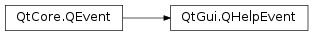

QHelpEvent¶
Detailed Description¶
The
PySide2.QtGui.QHelpEventclass provides an event that is used to request helpful information about a particular point in a widget.This event can be intercepted in applications to provide tooltips or “What’s This?” help for custom widgets. The
PySide2.QtCore.QEvent.type()can be eitherQEvent.ToolTiporQEvent.WhatsThis.See also
PySide2.QtWidgets.QToolTipPySide2.QtWidgets.QWhatsThisPySide2.QtGui.QStatusTipEventPySide2.QtGui.QWhatsThisClickedEvent
-
class
PySide2.QtGui.QHelpEvent(type, pos, globalPos)¶ Parameters: - globalPos –
PySide2.QtCore.QPoint - type –
PySide2.QtCore.QEvent.Type - pos –
PySide2.QtCore.QPoint
Constructs a help event with the given
typecorresponding to the widget-relative position specified byposand the global position specified byglobalPos.typemust be eitherQEvent.ToolTiporQEvent.WhatsThis.- globalPos –
-
PySide2.QtGui.QHelpEvent.globalPos()¶ Return type: PySide2.QtCore.QPointReturns the mouse cursor position when the event was generated in global coordinates.
-
PySide2.QtGui.QHelpEvent.globalX()¶ Return type: PySide2.QtCore.intSame as
PySide2.QtGui.QHelpEvent.globalPos().PySide2.QtGui.QHelpEvent.x().
-
PySide2.QtGui.QHelpEvent.globalY()¶ Return type: PySide2.QtCore.intSame as
PySide2.QtGui.QHelpEvent.globalPos().PySide2.QtGui.QHelpEvent.y().
-
PySide2.QtGui.QHelpEvent.pos()¶ Return type: PySide2.QtCore.QPointReturns the mouse cursor position when the event was generated, relative to the widget to which the event is dispatched.
-
PySide2.QtGui.QHelpEvent.x()¶ Return type: PySide2.QtCore.intSame as
PySide2.QtGui.QHelpEvent.pos()..
-
PySide2.QtGui.QHelpEvent.y()¶ Return type: PySide2.QtCore.intSame as
PySide2.QtGui.QHelpEvent.pos()..
© 2018 The Qt Company Ltd. Documentation contributions included herein are the copyrights of their respective owners. The documentation provided herein is licensed under the terms of the GNU Free Documentation License version 1.3 as published by the Free Software Foundation. Qt and respective logos are trademarks of The Qt Company Ltd. in Finland and/or other countries worldwide. All other trademarks are property of their respective owners.